Released on December 20, 2006
(Next Release on December 28, 2006)
Smarter Than The Average Bear?
Many of us were saddened to hear that Joe Barbera, the co-creator of Tom and Jerry, The Flintstones, The Jetsons, Scooby-Doo, and Yogi Bear, passed away earlier this week. The imprint he, along with his partner, Bill Hanna, had on many of our lives is indelible. For anyone that grew up with the animated characters mentioned above, it is hard to think of them without a smile crossing your face.
But when it comes to oil markets, many traders and oil market advisors are hoping that they can be smarter than the average bear, or analyst, in this context. As mentioned in last week’s As mentioned in last week’s This Week In Petroleum, there is a lot of uncertainty amongst oil market watchers in terms of where the market is headed over the next couple of months. This presents opportunities for traders to make money and for analysts to show how smart they are, since opinions vary. Ultimately, it will be clear whether, and to what extent, oil markets are tightening, with oil prices moving towards $70 per barrel, or loosening, with prices struggling to maintain $60 per barrel.
While EIA strives for accurate forecasts, our primary interest is in getting the story right rather than in predicting prices in any given month. For example, during the fall, EIA was projecting that oil prices would likely rise once the first cold spell swept across the nation. As highlighted in the December 6 edition of This Week In Petroleum, oil prices did increase at the end of November as a cold front moved from the Northwest United States to the East Coast. Of course, EIA had no special insight into when the first hint of winter weather would occur, making it more difficult to predict monthly average prices for October, November, or even December. But the underlying assessment of the fundamentals that led to our belief that markets would tighten and that oil prices would rise when sustained cold weather arrives appears to have been confirmed.
For many traders and analysts, the fundamental story, while important, may not be as important as accurately predicting prices and price differentials on a given day, week, or month. This may partly explain interest in our weekly data on U.S. oil supply and demand. These data are the most current available, and as such, provide the clearest snapshot of real-time oil market conditions, at least for the United States. The trick, however, is to deduce which data are more critical or key to near-term market direction (out of the reams of data EIA provides each week). Those traders and analysts who accurately predict oil prices based on their assessments of weekly data can then crow that, like Yogi Bear, they are “smarter than the average bear.”
Residential Heating Fuel Prices Hold Fast
Residential heating oil prices exhibited no change for the period ending December 18, 2006. The average residential heating oil price remained at 244.4 cents per gallon last week, which was an increase of 0.6 cent from this time last year. Wholesale heating oil prices gained 4.1 cents to reach 183.1 cents per gallon, an increase of 7.3 cents compared to the same period last year.
The average residential propane price increased 0.3 cent, to reach 198.1 cents per gallon. This was a decrease of 1.6 cents compared to the 199.7 cents per gallon average for this same time last year. Wholesale propane prices decreased by 3.8 cents per gallon, from 106.5 to 102.7 cents per gallon. This was a decrease of 16.1 cents from the December 19, 2005 price of 118.8 cents per gallon.
Average Retail Gasoline Price Increases While Diesel Price Falls
The U.S. average retail price for regular gasoline for December 18, 2006 jumped 2.7 cents to 232.0 cents per gallon, the highest average price since the end of September. Prices are 10.9 cents per gallon higher than at this time last year. East Coast prices were up 1.5 cents to 231.8 cents per gallon. In the Midwest, prices rose 4.7 cents to 227.1 cents per gallon. Gulf Coast prices were down 0.1 cent to 219.7 cents per gallon, while Rocky Mountain prices fell 0.6 cent to 224.2 cents per gallon. The West Coast saw an increase of 4.5 cents to 254.1 cents per gallon. California prices increased by 5.7 cents to 256.1 cents per gallon, 31.2 cents higher than at this time last year.
Retail diesel fuel prices were lower this week, falling 1.5 cents to 260.6 cents per gallon. However, prices are still 14.4 cents higher than at this time last year. All regions saw decreases this week. East Coast prices fell 1.1 cents to 259.9 cents per gallon, while the Midwest price decreased 0.8 cent to 255.5 cents per gallon. The Gulf Coast saw the average price go down 2.1 cents to 251.9 cents per gallon. Rocky Mountain prices fell 0.8 cent to 271.6 cents per gallon. Prices on the West Coast decreased 4.4 cents to 288.7 cents per gallon, while prices in California were down 4.6 cents to 291.7 cents per gallon.
Propane Inventories Continue Seasonal Decline
U.S. propane inventories continued to reflect seasonal declines last week with inventories moving down by 2.8 million barrels to an estimated 64.0 million barrels as of December 15, 2006. For the first two weeks of December, propane inventories have tracked close to the most recent 5-year average stockdraw for the month. During this same period, December saw propane inventories dropped by 4.8 million barrels, equaling about 46 percent of the 5-year monthly average of about 10.4 million barrels. Regionally, the weekly declines also reflected seasonal activity with the East Coast reporting inventories lower by 0.3 million barrels, while inventories in the Midwest and Gulf Coast regions reported weekly declines of 1.0 million barrels and 1.3 million barrels, respectively. The combined Rocky Mountain/West Coast regions moved down by 0.1 million barrels during this same time. In contrast, propylene non-fuel use inventories remained relatively flat for the second consecutive week at 3.5 million barrels, but accounted for a slightly higher 5.5 percent of total propane/propylene inventories compared with the prior week’s 5.3 percent.
Text from the previous editions of “This Week In Petroleum” is now accessible through a link at the top right-hand corner of this page.
| Retail Prices (Cents Per Gallon) | |||||||
| 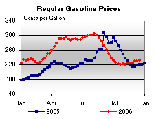 | 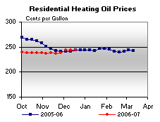 | ||||||
| 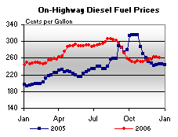 | 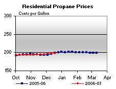 | ||||||
| Retail Data | Changes From | Retail Data | Changes From | ||||
| 12/18/06 | Week | Year | 12/18/06 | Week | Year | ||
| Gasoline | 232.0 | Heating Oil | 244.4 | ||||
| Diesel Fuel | 260.6 | Propane | 198.1 | ||||
| Spot Prices (Cents Per Gallon) | |||||||||||||||||||||||||||||||||||||||
| 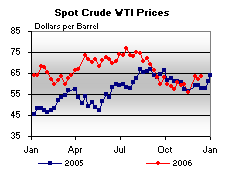 | 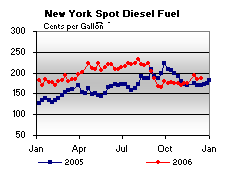 | ||||||||||||||||||||||||||||||||||||||
| 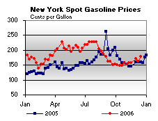 | 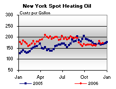 | ||||||||||||||||||||||||||||||||||||||
|
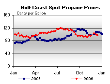 | ||||||||||||||||||||||||||||||||||||||
| Stocks (Million Barrels) | |||||||
| 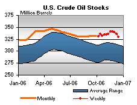 | 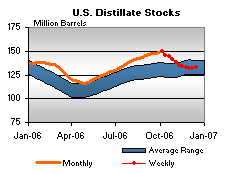 | ||||||
| 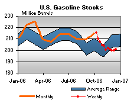 | 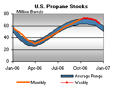 | ||||||
| Stocks Data | Changes From | Stocks Data | Changes From | ||||
| 12/15/06 | Week | Year | 12/15/06 | Week | Year | ||
| Crude Oil | 329.1 | Distillate | 133.1 | ||||
| Gasoline | 200.9 | Propane | 64.024 | ||||